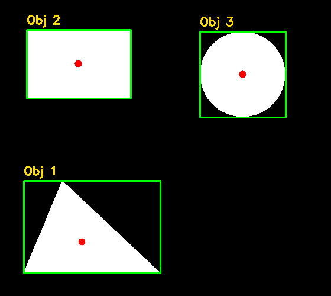

5. Contornos e extração de características geométricas¶
O que você aprenderá¶
Neste capítulo, você fará uma transição importante: sairemos da análise puramente pixel a pixel para uma representação vetorial da forma dos objetos. Em vez de perguntar apenas “qual é o valor deste pixel?”, começaremos a perguntar “quantos objetos existem?”, “qual é a área?”, “onde está o centro?”, “qual é a forma?” e “qual é a orientação?”.
Ao final, você deverá conseguir:
- diferenciar borda de contorno;
- preparar corretamente uma imagem binária para
findContours; - compreender o formato da lista de contornos;
- escolher modos de recuperação como
RETR_EXTERNALeRETR_TREE; - interpretar a hierarquia entre contornos;
- calcular área e perímetro;
- obter caixas delimitadoras;
- calcular centroides por momentos;
- tratar o caso
m00 = 0; - aproximar formas com
approxPolyDP; - calcular circularidade;
- ordenar contornos de forma determinística;
- filtrar ruído por medidas geométricas;
- construir classificadores simples baseados em forma.
Contornos são uma ponte entre segmentação e análise estrutural da cena. Eles transformam regiões binárias em sequências ordenadas de pontos, permitindo medições geométricas e descrições de forma (GONZALEZ; WOODS, 2010; SZELISKI, 2022).
5.1 Bordas e contornos não são a mesma coisa¶
Uma borda é uma resposta local a uma mudança de intensidade.
Um contorno é uma sequência organizada de coordenadas que descreve a fronteira de uma região binária.
Analogia: muro e planta do terreno¶
Uma borda é como perceber que existe um muro quando você se aproxima. Um contorno é como desenhar, em uma planta, todo o percurso desse muro ao redor do terreno.
O detector de Canny pode gerar fragmentos. findContours, por sua vez, percorre componentes conectados em uma máscara binária e devolve estruturas de pontos.
5.2 Preparação da entrada¶
findContours deve receber uma imagem de um canal, normalmente binária.
cinza = cv2.cvtColor(imagem, cv2.COLOR_BGR2GRAY)
_, binaria = cv2.threshold(
cinza,
127,
255,
cv2.THRESH_BINARY
)
Depois:
5.3 O retorno não é uma imagem¶
contornos é uma lista.
Cada elemento contém uma sequência de pontos (x, y).
Em geral, a estrutura é semelhante a:
em que N é a quantidade de pontos armazenados.
5.4 CHAIN_APPROX_NONE versus CHAIN_APPROX_SIMPLE¶
Com:
muitos pontos ao longo da fronteira são preservados.
Com:
segmentos retos são comprimidos.
Analogia: descrever um retângulo¶
Você pode registrar cada centímetro dos quatro lados ou apenas guardar os quatro cantos. Para reconstruir o retângulo, os cantos são suficientes.
5.5 Modos de recuperação¶
Somente externos¶
Ignora relações internas. Útil quando desejamos contar objetos externos separados.
Lista simples¶
Recupera contornos sem organizar relações pai-filho.
Hierarquia completa¶
Preserva relações entre contornos internos e externos.
5.6 Hierarquia como árvore de pastas¶
Imagine um anel:
- existe um contorno externo;
- existe um contorno interno correspondente ao buraco.
Com RETR_TREE, a hierarquia informa relações como:
- próximo;
- anterior;
- primeiro filho;
- pai.
Analogia: diretórios¶
Uma pasta pode conter outra pasta. Da mesma forma, um contorno pode conter outro.
5.7 Desenhando contornos¶
O índice -1 significa desenhar todos.
5.8 Área¶
A unidade é aproximadamente pixels quadrados.
Exemplo 1 — filtrando objetos pequenos¶
Isso pode remover ruído, mas somente se objetos verdadeiros forem maiores que o limiar.
Área pequena não significa automaticamente ruído
Um objeto legítimo pode ser pequeno. O limiar precisa ser definido a partir da aplicação.
5.9 Perímetro¶
closed=True indica uma curva fechada.
Área e perímetro são usados juntos em várias medidas de forma.
5.10 Bounding box alinhada aos eixos¶
x, y, w, h = cv2.boundingRect(contorno)
cv2.rectangle(
saida,
(x, y),
(x + w, y + h),
(255, 0, 0),
2
)
Essa caixa permanece alinhada ao eixo da imagem.
Limitação¶
Um objeto inclinado pode ocupar uma caixa muito maior do que sua área real.
5.11 Caixa rotacionada¶
retangulo = cv2.minAreaRect(contorno)
caixa = cv2.boxPoints(retangulo)
caixa = caixa.astype(int)
cv2.drawContours(
saida,
[caixa],
0,
(0, 0, 255),
2
)
minAreaRect busca um retângulo rotacionado que envolva o contorno com pequena área.
Analogia¶
boundingRect é como guardar uma régua inclinada em uma caixa que não pode girar. minAreaRect permite girar a caixa junto com a régua.
5.12 Momentos geométricos¶
Os momentos resumem propriedades da distribuição espacial da região.
O centroide pode ser calculado por:
(GONZALEZ; WOODS, 2010).
Exemplo 2¶
M = cv2.moments(contorno)
if M["m00"] != 0:
cx = int(M["m10"] / M["m00"])
cy = int(M["m01"] / M["m00"])
5.13 Por que m00 pode ser zero?¶
Um contorno degenerado pode não possuir área significativa.
Fazer:
sem verificar pode causar divisão por zero.
Sempre trate o caso explicitamente.
5.14 Aproximação poligonal¶
approxPolyDP simplifica um contorno.
perimetro = cv2.arcLength(contorno, True)
epsilon = 0.02 * perimetro
aproximado = cv2.approxPolyDP(
contorno,
epsilon,
True
)
Interpretação¶
- 3 vértices → candidato a triângulo;
- 4 vértices → candidato a quadrilátero;
- muitos vértices → curva mais complexa.
Mas o número de vértices depende de epsilon e do ruído.
5.15 O papel de epsilon¶
Valor pequeno:
- mantém mais detalhes;
- mais vértices.
Valor grande:
- simplifica mais;
- pode apagar detalhes importantes.
Analogia: desenhar uma costa em um mapa¶
Em um mapa muito detalhado, registramos pequenas reentrâncias. Em um mapa simplificado, representamos apenas grandes mudanças de direção.
5.16 Circularidade¶
Uma medida clássica é:
em que:
A= área;P= perímetro.
Exemplo 3¶
import math
area = cv2.contourArea(contorno)
perimetro = cv2.arcLength(contorno, True)
if perimetro > 0:
circularidade = 4 * math.pi * area / (perimetro ** 2)
Um círculo ideal tende a valor próximo de 1. Formas alongadas tendem a valores menores.
Isso não é um reconhecedor universal: resolução, serrilhamento e ruído alteram área e perímetro.
5.17 Razão de aspecto¶
Uma placa horizontal, por exemplo, tende a ter razão maior que 1.
Combine medidas em vez de confiar em uma só.
5.18 Ordenação de contornos¶
A ordem retornada por findContours não deve ser tratada como significado semântico.
Se você quer numerar objetos da esquerda para a direita:
Analogia¶
É como organizar alunos por ordem alfabética antes de numerá-los. Sem uma regra, a numeração pode variar.
5.19 Classificador geométrico simples¶
def classificar_forma(contorno):
perimetro = cv2.arcLength(contorno, True)
aproximado = cv2.approxPolyDP(
contorno,
0.02 * perimetro,
True
)
vertices = len(aproximado)
if vertices == 3:
return "triangulo"
if vertices == 4:
return "quadrilatero"
return "forma arredondada/complexa"
Esse exemplo é didático. Em dados reais, combine circularidade, razão de aspecto, convexidade e tolerâncias.
5.20 Exemplo integrado do capítulo¶
O código do capítulo 5 cria várias formas, extrai os contornos e calcula características.
Pipeline:
formas sintéticas
↓
binarização
↓
findContours
↓
filtro por área
↓
ordenação espacial
↓
área / perímetro / centroide
↓
bounding boxes
↓
aproximação / circularidade
↓
anotação e relatório

5.21 Erros comuns¶
| Sintoma | Causa provável | Correção |
|---|---|---|
| nenhum contorno | máscara vazia/polaridade errada | visualize a binária |
| muitos contornos minúsculos | ruído | morfologia/filtro por área |
| buracos não aparecem | RETR_EXTERNAL |
use RETR_TREE |
| centroide gera erro | m00 == 0 |
teste antes de dividir |
| retângulo ocupa área demais | objeto rotacionado | use minAreaRect |
| forma muda de classe | epsilon inadequado |
calibre por escala/ruído |
| IDs mudam entre execuções | ordem implícita | ordene explicitamente |
5.22 Perguntas de revisão¶
- Qual a diferença entre borda e contorno?
- O que
findContoursretorna? - Para que serve
CHAIN_APPROX_SIMPLE? - Quando usar
RETR_TREE? - Qual unidade da área de um contorno?
- Como calcular centroide?
- Por que verificar
m00? - Qual diferença entre
boundingRecteminAreaRect? - O que
epsiloncontrola emapproxPolyDP? - Por que circularidade não é um reconhecedor perfeito?
Exercícios de fixação¶
Exercício 1¶
Crie uma imagem com cinco objetos e conte quantos contornos externos existem.
Exercício 2¶
Adicione 100 pequenos pontos de ruído e filtre contornos por área.
Exercício 3¶
Crie um anel e compare RETR_EXTERNAL com RETR_TREE.
Exercício 4¶
Calcule área e perímetro de um retângulo sintético e compare com os valores teóricos.
Exercício 5¶
Desenhe os centroides de todos os objetos.
Exercício 6¶
Rotacione um retângulo e compare boundingRect e minAreaRect.
Exercício 7¶
Crie triângulo, quadrado, pentágono e círculo. Use approxPolyDP para contar vértices.
Exercício 8¶
Varie epsilon entre 0,5%, 2%, 5% e 10% do perímetro. Registre o número de vértices.
Exercício 9¶
Calcule circularidade de círculo, quadrado e retângulo alongado.
Exercício 10¶
Ordene objetos da esquerda para a direita e escreva 1, 2, 3 sobre eles.
Exercício 11¶
Ordene os mesmos objetos por área, do maior para o menor.
Exercício 12¶
Implemente um classificador geométrico que combine número de vértices e circularidade.
Exercício 13¶
Explique por que medir área em pixels quadrados não fornece automaticamente área em centímetros quadrados.
Síntese¶
Contornos transformam regiões binárias em estruturas geométricas mensuráveis. Área, perímetro, caixas, momentos, vértices e circularidade permitem construir regras simples e interpretáveis. O principal cuidado é lembrar que todas essas medidas dependem da qualidade da segmentação, da escala da imagem e dos parâmetros escolhidos.
Referências¶
GONZALEZ, Rafael C.; WOODS, Richard E. Processamento Digital de Imagens. 3. ed. São Paulo: Pearson, 2010.
SZELISKI, Richard. Computer Vision: Algorithms and Applications. 2. ed. Cham: Springer, 2022.